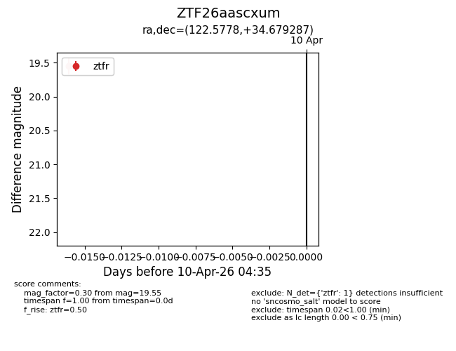
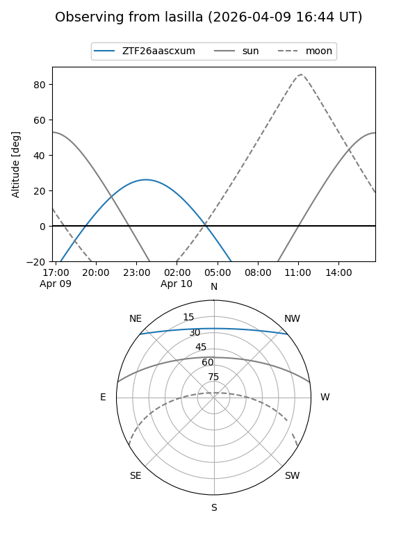
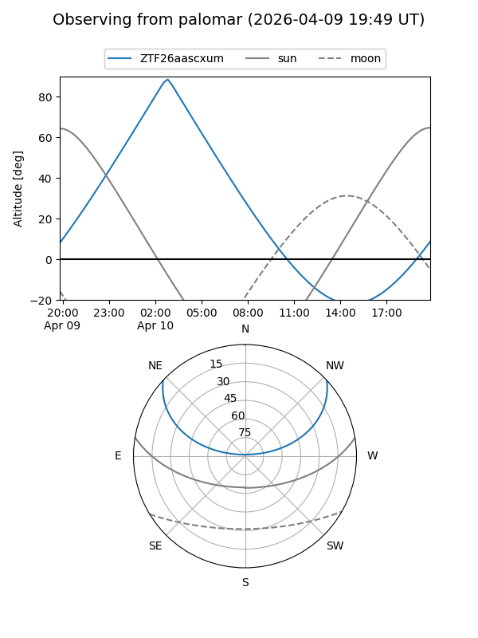

ZTF26aascxum
Target ZTF26aascxum at 2026-04-10 04:41
Aliases and brokers:
FINK: link
Lasair: link
ALeRCE: link
alt names
ZTF26aascxum (ztf,fink_ztf)
Coordinates:
equatorial (ra, dec) = 122.5778,+34.67929
equatorial (HMS+DMS) = 08:10:18.68,+34:40:45.43
galactic (l, b) = (186.7944,+30.42309)
Flags:
Photometry:
last ztfr=19.55
1 ztfr detections
Lightcurve

Visibility


Additional plots